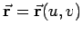
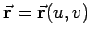

Inhalt Index DeskTop Bronstein

 Geometrie Differentialgeometrie Flächen Möglichkeiten, eine Fläche zu definieren
Geometrie Differentialgeometrie Flächen Möglichkeiten, eine Fläche zu definieren


Für eine in der Parameterform  (3.511) oder Vektorform  bzw.
(3.511) oder Vektorform  bzw.  (3.512) gegebene Fläche erhält man durch Variieren des Parameters u bei gleichzeitigem Festhalten von v = v0 die Punkte einer Kurve
(3.512) gegebene Fläche erhält man durch Variieren des Parameters u bei gleichzeitigem Festhalten von v = v0 die Punkte einer Kurve  auf der Fläche. Werden für v nacheinander verschiedene, aber feste Werte eingesetzt, dann ergibt sich eine Kurvenschar auf der Fläche. Da bei der Bewegung längs einer solchen Kurve mit
auf der Fläche. Werden für v nacheinander verschiedene, aber feste Werte eingesetzt, dann ergibt sich eine Kurvenschar auf der Fläche. Da bei der Bewegung längs einer solchen Kurve mit  nur u geändert wird, nennt man diese Kurven die u-Linien.
nur u geändert wird, nennt man diese Kurven die u-Linien.
In Analogie dazu erhält man beim Variieren von v und gleichzeitigem Festhalten von für eine zweite Kurvenschar und spricht von v-Linien. Auf diese Weise kann man auf der Fläche (3.511) ein Netz von Koordinatenlinien entstehen lassen, in dem zwei feste Zahlen u =ui und v =vk die krummlinigen oder GAUSSschen Koordinaten des Flächenpunktes P sind.
Wenn eine Fläche in der Form (3.510) gegeben ist, stellen die Koordinatenlinien Schnitte der Fläche mit den Ebenen und dar. Mit Gleichungen der impliziten Form F(u,v) =0 oder mit den Parametergleichungen u =u(t) und v =v(t) zwischen diesen Koordinaten werden Kurven auf der Fläche beschrieben.
| Beispiel |
|
Die Parametergleichungen der Kugel (3.514,c) ergeben für u die geographische Länge eines Punktes P und v seinen Polabstand, das Komplement zu seiner geographischen Breite. Die v-Linien sind hier die Meridiane die u-Linien die Breitenkreise |